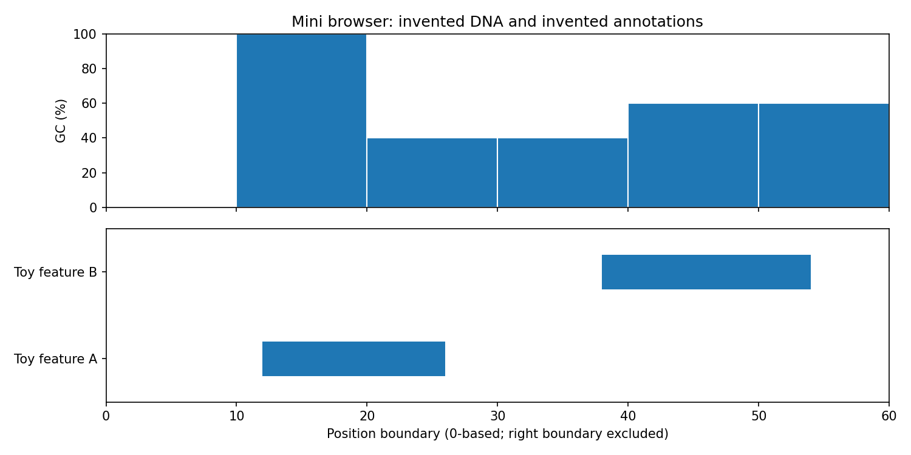

Run a few lines, change one thing, and check what happened. Build a small sequence track with your instructor, then choose a question for your own project.
Today’s notebook is an in-class workshop. We introduce Python as we need it: names and strings, positions, counting, loops, lists, and a supplied plot. The project menu includes research without required coding and Python analysis and visualization projects.
If the GitHub notebook is unavailable, download it here and upload the file to Colab. Class: 180 minutes including a ten-minute break. Follow-up practice and personal planning: a separate 60–90 minutes.
A DNA composition track, one step at a time
The question is small: how does the fraction of G and C change along this invented DNA string? We will count letters in consecutive windows and draw one bar per window. This builds on the sequence and coordinate ideas from Weeks 1–3.
At each step: predict the result, run the supplied code, make one small change, and explain the new output. Keep your prediction even if it was wrong. It shows which idea the experiment helped you understand.
The notebook’s seven steps
Step
New Python idea
Your action
1. Store DNA
A name, a quoted string, print, len
Add one base and check the length.
2. Choose positions
Indexing and a slice
Select the first four letters.
3. Count G and C
Counts and arithmetic
Change the sequence and verify the percentage by hand.
4. Repeat
A list, a loop, indentation
Add one indented line and explain how often it runs.
5. Walk along DNA
range and repeated slices
Compare ten- and twenty-base windows.
6. Save results
Empty lists and append
Trace two loop iterations, then collect all results.
7. Draw a track
Supplied plotting code
Change the window size, rerun the calculation, and redraw.
For ATGCGCAT, there are two Gs and two Cs among eight bases. The GC percentage is 100 × (2 + 2) / 8 = 50%. Python’s slice dna[2:6] selects GCGC: positions 2, 3, 4, and 5. The start is included and the stop is excluded.
Our inputs are nonempty uppercase A/C/G/T strings. Lowercase letters and unknown bases would need a handling rule. GC percentage describes composition; it does not establish that a segment is a gene or that it is active.
Getting back to a working notebook
Editing a cell does not execute it. After changing a value, run the calculation and then its plot. If a name is undefined, run the cell that creates it. After a runtime restart, run from the top. For an error, read the final line, locate the highlighted code, and change one thing. The notebook has examples for missing quotes, indentation, indexing, and empty input.
If you fall behind, run the supplied working version of the current step and explain one result with a partner. You can return to the small editing task afterward. The drawing helper and function definition in the browser preview are supplied, optional code.
Notebook appendix: the downloadable notebook ends with an optional Smith–Waterman simulator. Edit two DNA sequences, the full substitution-score matrix, and a gap score; inspect the DP table cell by cell and trace one best local alignment. It can run independently of the workshop exercises.
From one track to a tiny browser

The optional notebook preview aligns a GC track and two invented annotation intervals. Annotations are supplied independently; the GC calculation did not discover them. Coordinates use zero-based, start-inclusive, stop-exclusive intervals.
Change show_region(0, 60) to show_region(10, 40). The picture shows a smaller region on both tracks. Feature B still spans 38–54, but only 38–40 is visible. Zooming crops the view; it does not recalculate the GC windows.
A real genome browser organizes many tracks against a reference assembly. This classroom example introduces shared coordinates. The six-week browser project below adds file loading, region selection, validation, tests, and an analysis of a documented sequence region. See the UCSC Genome Browser guide and its BED coordinate explanation. Record the reference assembly and coordinate convention whenever using real data.
One complete project: 30% of the final grade
Complete your project within six weeks, allowing about four hours per week: approximately 24 hours in total. This budget includes reading, implementation or analysis, checking results, writing, and preparing the final explanation. Organize that time yourself. There are no weekly milestones, progress reports, or interim submissions; submit the complete project at the end of the six-week period. The instructor will announce the calendar deadline and submission location.
Choose exactly one of two types: a research project or a coding project. Research projects produce an evidence-based report and presentation without a programming deliverable. Coding projects produce a working Python tool or analysis with tests and a technical explanation. Coding assumes intermediate Python: functions, lists and dictionaries, file input, debugging, and using a plotting library. Today’s guided notebook provides practice and examples; submitting it with only cosmetic changes does not meet the project scope.
The four full examples below show the expected depth: two research projects and two coding projects. Ten further ideas are listed afterward. For any choice, keep the complete project within roughly 24 hours, including evaluation and the final report; extensions are optional.
Two research project examples
Choose one focused question, compare published evidence, and explain a worked example. You do not need to write software. Submit a 4–6-page report with sources and original explanatory figures, and prepare the final presentation described below.
1 / Research
Compare two sequencing mechanisms for a defined task
Question: How do fluorescence and nanopore-current measurements differ, and how do those differences matter for one chosen sequencing task?
Required core
Explain the physical signal, the base-calling step, and one source of uncertainty for each technology. Compare their suitability for one task, such as resolving a repeat or inspecting a short sequence difference. Build an evidence table comparing two published studies or benchmarks, with sample type, method/version, reported metric, and limitations. Identify when the studies are not directly comparable.
Sources and worked example
Use at least six relevant sources, including two primary research studies or technical benchmark reports. Begin with Week 1, Illumina’s mechanism explanation, and Oxford Nanopore’s technology explanation. Draw your own signal-to-sequence diagram and work through one small uncertainty example.
Final result
An illustrated 4–6-page comparative report, excluding references, with a justified recommendation for the chosen task and a clear account of what the evidence cannot settle.
Check
Trace every performance claim to its source and experimental setting. Separate raw-read accuracy, consensus accuracy, and task-specific success where the sources report them; do not treat these as interchangeable.
Scope limit
Two technology families and one task. No instrument access, comprehensive market survey, or universal “best sequencer” ranking. An optional extra is a hand-drawn schematic signal diagram; it is not needed for a complete project.
2 / Research
Explain an assembly problem using repeat evidence
Question: When do repeated sequences leave more than one reconstruction possible, and what evidence resolved a documented example?
Required core
Construct a short repeat example with two reconstructions that share the same short-word inventory. Show a longer observation that distinguishes them. Then analyse one published assembly case: identify the difficult sequence structure, the evidence used to resolve it, and how the authors evaluated their result. Compare that account with a second primary study or technical analysis.
Sources and worked example
Use at least six relevant sources, including two primary studies or technical reports. Start with the Week 3 repeat example and The complete sequence of a human genome. Draw your own sequence or graph diagram and list the observations supporting each toy reconstruction.
Final result
An illustrated 4–6-page report, excluding references, connecting the hand-worked ambiguity to the published case. Include an evidence table and discuss why contiguity statistics alone cannot establish correctness.
Check
Verify the short-word inventories and distinguishing observation by hand, showing the counts in a table. Separate conclusions about the toy from those supported by the published experiment.
Scope limit
One class of repeat ambiguity and one main case study. No reproduction of a whole-genome assembly pipeline. A second repeat mechanism is an optional extension.
Two coding project examples
Choose one intermediate-Python project. Build the required tool or analysis, verify it with tests and documented examples, and submit runnable code with a short technical report. Reading documentation and citing sources support the implementation; a separate literature-research project is not required.
3 / Coding / Intermediate Python
Build a genome-region browser
Question: How can a user inspect sequence composition and supplied annotations within a selected reference region?
Required core
Load a small FASTA reference and a documented four-column BED subset (sequence ID, start, stop, name). Display an annotation track and a GC track on a shared coordinate axis, plus the selected DNA when the view is short. Provide region selection, zoom or pan, and feature-name lookup. Show clear messages for unknown sequence IDs, malformed records, invalid intervals, and no overlapping features. Export a labeled figure.
Data and analysis
Keep the 60-base classroom example as a coordinate test. Demonstrate the final browser on one small public reference region with matching annotations and recorded assembly/version. Explain two views of that region and how their scales affect what the reader can see. Use the BED coordinate definition consistently.
Check
Test 0:60, 10:40, and 26:38 on the toy features A=[12,26), B=[38,54). Only B’s 38:40 portion is visible in the middle view; neither feature overlaps the last. Test touching boundaries, overlapping features, invalid input, and matching axes. Document whether zoom crops existing GC bins or recalculates them.
Final result
Runnable browser code or notebook, small reference/annotation fixtures, automated coordinate and parser tests, an exported figure, and a 2–3-page technical explanation. Notebook controls or parameter cells are sufficient; a hosted website is not required.
Scope limit
One reference region and two main tracks. The supplied renderer can be reused with attribution, but file loading, navigation, validation, tests, and the documented region analysis must be developed. BAM support and an additional track are optional extensions.
4 / Coding / Intermediate Python
Build an LLM bioinformatics question-answering tool with source checks
Question: Can a large language model (LLM) answer questions from a small collection of bioinformatics explanations and identify when those explanations do not contain an answer?
Required core
Load 10–15 short passages about one topic, such as sequence quality, alignment, or assembly, from a local CSV or JSON file. Give each passage a stable ID and source. Implement keyword-based retrieval of up to three relevant passages, pass them and the question to one existing LLM, and display the answer beside the retrieved text and cited passage IDs. Request an answer supported by those passages, or an explicit statement that the information is insufficient. Check that returned citation IDs exist; assess whether they actually support the answer during evaluation. Export questions, retrieved IDs, answers, and evaluation results.
Data and model
Use selected course explanations or openly licensed teaching text, preserving attribution. Write 12 questions and reference answers with supporting passage IDs before tuning: four development questions and eight held-out evaluation questions, including two whose answers are absent from the collection. Use a model that runs on available hardware or an instructor-provided endpoint; establish usable access before choosing this topic. The Hugging Face chat-template guide and text-generation guide explain one possible local integration route. Training a model is not required.
Worked behavior
Suppose passage P01 states that ATGCGCAT contains four G/C bases out of eight. For “What is its GC percentage?”, expect 50% with P01 cited. For “What nanopore current does this sequence produce?”, expect insufficient information if none of the supplied passages reports a current. A plausible number without source support is a failed answer.
Evaluation and tests
Keep the eight evaluation questions unchanged while tuning on the other four. Compare a retrieval-only display of source passages with the LLM answers. Report retrieval of the expected source, answer correctness, support for cited claims, and appropriate abstention separately, using raw counts and denominators. Inspect every evaluation answer and discuss at least two failure cases or difficult questions. Test an empty question, an empty collection, no relevant passage, an invalid citation ID, and a model error. Passing a citation-ID check alone does not establish factual support.
Final result
A runnable Python notebook or small application with separate loading, retrieval, model-call, and evaluation functions; the passage collection and question set; automated tests; saved actual model outputs; an exported comparison table or plot; and a 2–3-page technical report. Record the model/version, generation settings, prompt, and run date. Saved outputs allow replay of the submitted evaluation, but do not replace a working model integration.
Scope limit
One topic, one model, 10–15 passages, and 12 questions. No fine-tuning, web crawler, vector database, or deployment is required. This is a coding project evaluated on implementation and measured behavior, not a literature-review assignment. An optional extension compares a second retrieval method after the core is complete.
Ten more project ideas
Each idea is an alternative to the full examples, not an extra task. Choose either research or coding and use the corresponding final deliverables below, with one focused question and a 24-hour scope.
Research — Genome-browser evidence: trace the origins of three tracks in one region and compare what their annotations and measurements support.
Research — Protein-structure confidence: compare two published examples to explain what confidence scores establish and what they leave unresolved about function.
Research — Reference bias: compare evidence from two studies showing how the chosen reference changes read placement or variant detection.
Research — LLM claims and citations: compare two published evaluations of biomedical answers and explain how they measure factual support and citation errors.
Research — Evaluating biological LLMs: compare two studies’ test sets and data-splitting methods, focusing on possible leakage and the generalization being tested.
Coding — DNA composition explorer: load FASTA, compare GC windows and unknown-base handling, and export tested plots and tables.
Coding — Coverage simulator: compare seeded read-sampling patterns using depth, breadth, and the longest uncovered interval.
Coding — Exact-match explorer: display overlapping matches on both strands and test coordinates against hand-worked examples.
Coding — FASTQ quality report: validate a small FASTQ subset and compare read retention under two quality-filtering rules.
Coding — LLM study-field extractor: extract organism, method, and sample size from ten open abstracts into a table, testing against manual labels and preserving missing values.
Submit one final project package
Research: a focused 4–6-page report, excluding references, with an evidence table, an original explanatory figure or worked example, and at least six relevant sources including two primary studies or technical reports. Explain how you selected sources and where their claims disagree or use different conditions.
Coding: runnable Python code or a notebook, small example data and their provenance, setup/run instructions with dependency versions, automated tests, exported results, and a 2–3-page explanation of the question, method, findings, and limitations. Organize the central operations into functions; show that a clean run reproduces the submitted result.
For every route, prepare an eight-minute research presentation or coding demonstration and be ready to answer questions about one calculation, source comparison, or design choice. Slides are optional. Include all source credits and, if working in an instructor-approved team, a statement of individual contributions. The expected investment is approximately 24 hours per student, including the final report and explanation. Completing a core brief well is sufficient; extensions are not required for full marks.